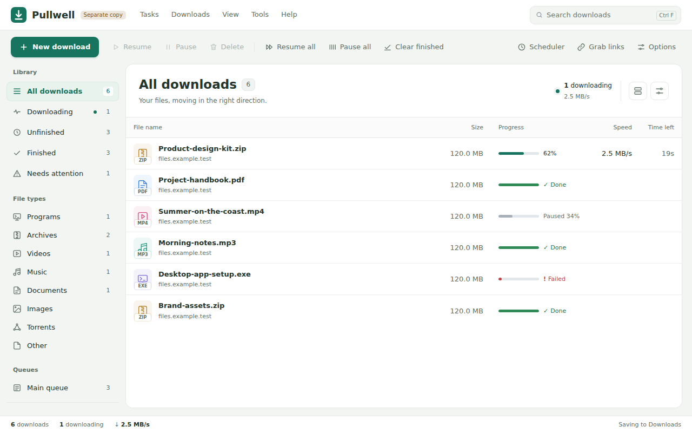

I build the tools I wish already existed.
Most of these started as a small annoyance on my own PC. When the fix turns out useful, I put it here. Six apps so far, all free to download.
- notice
- wonder
- build
- share
- repeat
Apps
-
NetMerge Actively updated
Two internet lines at home, but only one doing the work? NetMerge uses your cable, Wi-Fi and hotspot together as one faster connection.
- Each new connection goes to the line with the most spare speed
- Choose a line per app, track data use per line, set a backup-only line
- Share the merged connection with your phone by QR code
- No extra hardware, no paid service, no relay server
- Runs on
- Windows 11
- Version
- 3.17.5
- Built in
- Go
-
NetMerge for Android Test builds
The same idea on a phone: Wi-Fi and mobile data working at the same time, with more traffic sent to whichever is faster.
- About 38% faster many-connection downloads, measured on a Galaxy S26 Ultra with two fast networks
- If one network drops mid-download, the stall is under 3 seconds
- A daily limit for the mobile data that merging may use
- Not released yet. Expect rough edges.
- Runs on
- Android
- Version
- test-build
- Built in
- Kotlin, Go
-
Pullwell Early releases
A download manager that doesn't give up halfway. It resumes after a crash, a restart or a lost connection, and sends no telemetry.
- Several connections per file, and a finished file is checked for size and checksum
- Queues, a scheduler, speed limits, web video (HLS/DASH), FTP and BitTorrent
- Its own extension for Chrome, Edge, Brave and Firefox
- One file, no installer, no administrator prompt. It updates itself.
- Runs on
- Windows 10, 11
- Version
- 0.10.0
- Built in
- Go

Pullwell's main window, with sample downloads. -
ClearWrite Beta
A writing assistant that checks spelling and grammar on your own computer. No account, no API key, no internet connection needed.
- Underlines mistakes where you type, in the apps you already use
- Never changes your text by itself. You accept each fix.
- Learns the fixes you accept and the suggestions you ignore, on your PC only
- Rewrites with Gemini or ChatGPT are there if you switch them on
- Runs on
- Windows
- Version
- 0.2.0-beta.8
- Built in
- JavaScript
-
Vox Early releases
A voice assistant that runs your PC. Say "Hi Vox", say what you want, and it does it and tells you what it did.
- "Create a folder on the desktop and move everything not opened in 20 days into it"
- Everyday commands run instantly, with no AI request at all
- Asks before deleting or shutting down. "Undo that" puts files back.
- Needs your own Gemini or OpenAI API key for the harder requests
- Runs on
- Windows 11
- Version
- 0.4.3
- Built in
- Python
-
AI CV Studio Live
Upload your CV, or answer a few plain questions, and get a professional one you can edit and download as a PDF. Free, with no account.
- Takes a PDF, a Word file or a photo of a paper CV
- Designs suited to your kind of work, with colours and fonts you can change
- The writing help improves your wording without inventing jobs, dates or numbers
- Nothing to install. It runs in your browser.
- Runs on
- Any browser
- Built in
- Next.js, TypeScript
Nothing for this platform yet.
Before you download
Windows may warn you
The Windows apps are not code-signed yet, so Windows may say the publisher is unknown. Choose More info, then Run anyway.
A hobby, shared
I build these in my free time because I enjoy it. They are free, and each one says plainly what it can and can't do yet. If something breaks, tell me on GitHub.